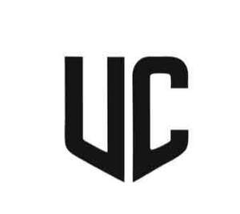

Trade Mark Journal No.2026/007 13 February 2026
UK00004333152 31 January 2026 (25,28)

- Class 25
- Football jerseys; Football shirts; Football shoes; Football boots; American football shirts; American football shorts; American football socks; American football bibs; American football pants; Soccer shirts; Rugby jerseys; Studs for football shoes; Replica football kits; Studs for football boots; Football boots (Studs for -); Volleyball jerseys; Sports jerseys; Soccer shoes; Soccer boots; Rugby shirts; Soccer bibs; Sports jerseys and breeches for sports; Baseball uniforms; Rugby shoes; Sports shirts; Rugby shorts; Basketball shoes; Sports over uniforms; Rugby boots; Basketball sneakers; Sport shirts; Combative sports uniforms; Athletic uniforms; Sports caps; Baseball shoes; Sports socks.
- Class 28
- Football or soccer goals; Football equipment; Football gloves; Rugby footballs; Gloves for American football; Indoor football tables; Football (Tables for indoor -); Tables for indoor football; Indoor football (Tables for -); Girdles for American football; Knee pads for American football; Football field model toys; Football blocking sleds; Body protectors for American football; Soccer balls; Leg pads for American football; Elbow pads for American football; Chest pads for American football; Shoulder pads for American football; Soccer ball bags; Soccer goals; Sports games; Hockey games; Volleyball game playing equipment; Balls for playing sports; Tabletop basketball games; Basketball goals; Apparatus for use in training for the game of rugby [sporting equipment]; Balls for playing field hockey; Field hockey goalkeeper pads; Rugby balls; Footballs; Supporters (Men's athletic -) [sports articles]; Men's athletic supporters [sports articles]; Tennis uprights [sports equipment]; Miniature replica football kits; Balls for playing handball; Basketball hoops; Golf flags [sports articles]; Soccer ball goal nets; American footballs; Balls for playing lacrosse; Nets for sporting ball games; Javelins [for field sports]; Balls for sports; Sports balls; Soccer ball knee pads; Table football tables; Tables for table football; Field hockey balls; Basketball nets; Arcade basketball shooting games; Volleyball uprights; Baseball balls; Clubs for gymnastics; Low-friction game tables for playing hockey games; Basketball backboards; Backboards for basketball; Futsal balls.
UPCHAMP LTD